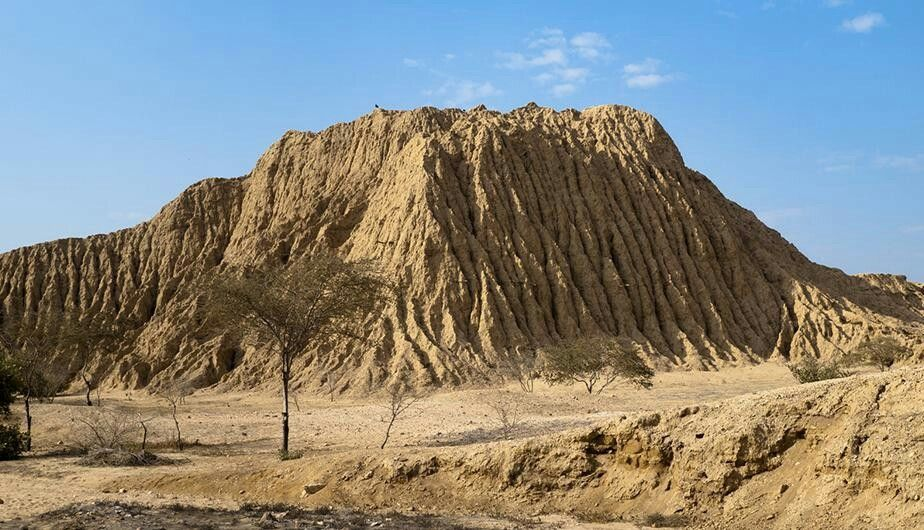
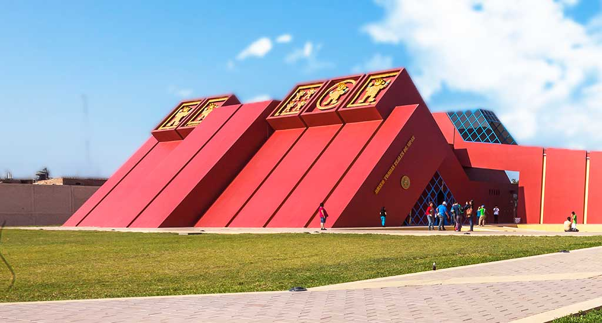
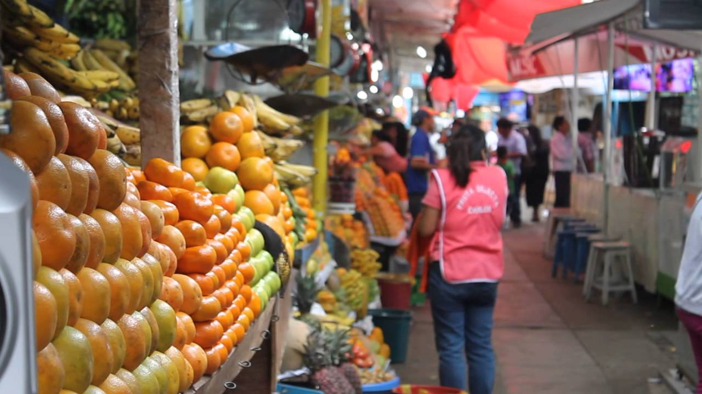

Brief History and Culture
Chiclayo, located in northern Peru, is known for its rich history that dates back to ancient civilizations. The region is home to significant archaeological sites, such as the Royal Tombs of Sipán, which reveal the grandeur of the Moche culture.
The city's culture is a vibrant mix of indigenous traditions and colonial influences, evident in its festivals, music, and art. From the colorful markets to the warm hospitality of its people, Chiclayo offers a unique glimpse into Peruvian life.
Why Visit Chiclayo?
- Rich History: Discover the archaeological wonders that tell the story of ancient Peru.
- Delicious Cuisine: Enjoy traditional dishes, especially its famous seafood.
- Warm Hospitality: Experience the friendliness of the local people.
- Cultural Festivals: Immerse yourself in vibrant local celebrations throughout the year.
Featured Attractions
- Túcume Pyramids - Explore the ancient pyramids... 
- Royal Tombs of Sipán Museum - Discover the treasures... 
- Chiclayo Market - Experience the vibrant atmosphere... 
What Visitors Say
"Chiclayo was an unforgettable experience! The food and culture are simply amazing." - Sarah, Traveler
"The pyramids and the museum are must-sees. A truly enriching experience!" - John, History Enthusiast